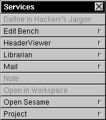

The Services Menu
The Services Menu allows other programs to provide services to modify Resound sounds. An example service menu is is shown below for my Edit application.

Note that there aren't too many programs which can modify sounds using services. Nonetheless, this menu is provided for consistency in the NeXTSTEP environment.